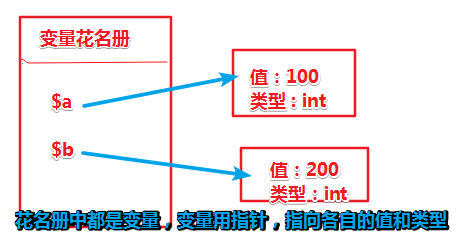
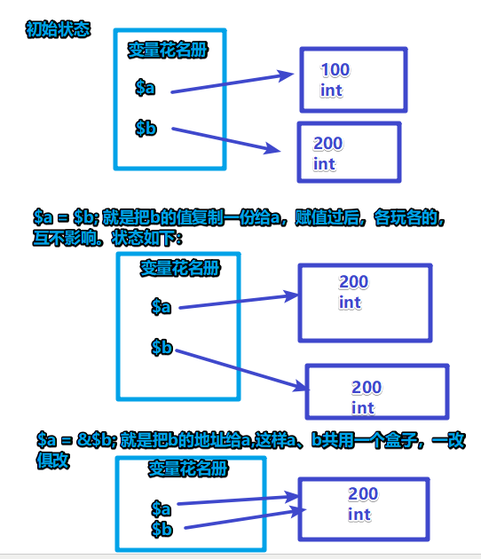
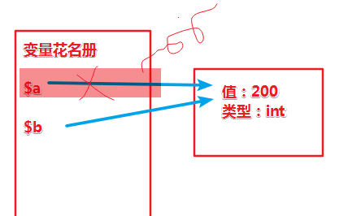
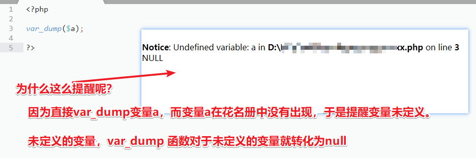
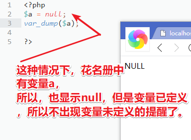

$a = 100;
$b = 200;
php中，上面代码中变量是怎么存放的呢？

此时若将b赋值给a，即
传值赋值 $a = $b; 和 引用赋值$a = &$b; 有什么区别呢?
传值赋值就是复制过去，然后各玩各的，互不影响。
引用赋值是两个变量指向一个盒子，一旦这样，一改俱改。
这样赋予变量a的就不仅仅是变量b的值，而是变量b的地址，变量a和变量b共同指向一个地址。
1 <?php
2 $a = 100;
3 $b = 200;
4
5 $a = &$b;
6 var_dump($a,$b); //int(200) int(200)
7 /*变量b引用赋值给变量a后，ab指向同一个地址，将会一改俱改，如下：*/
8 $a =500;
9 var_dump($a,$b);//int(500) int(500) 一改俱改之改a也改了b
10 $b = 700;
11 var_dump($a,$b);//int(700) int(700) 一改俱改之改b也改了a
12
13 $c = 900;
14 $a = $c;
15 var_dump($a,$b);//int(900) int(900) 一改俱改之其他变量值复制给a、b
16 ?>
<?php
/*理解下面的话*/
$a = 100;
//变量a赋值int 100 ，100是基础数据类型，不是变量，新建一个盒子，里面存放int 100，让a指向它
$a = $b;
//变量b的值 赋值 给变量a，变量a，b各有各的指向，执行之后，各是各的。
$a = &$b;
//变量b的值的地址 赋值给变量 a ,变量a,b共用一个地址哦！一改俱改！
?>
销毁变量用unset
在php中，变量占据了两个地方，1.花名册中占个名字 2.存储其值的“盒子”（其实就是内存中一块地方）。
unset($a) ;会发生什么？
首先，会将$a这个变量扔出花名册，于是没有这个变量了。
其次，检查有没有其他变量也指向这个“盒子”，如果没有其他变量指向这个“盒子”，再检查盒子所占空间超过255字节长没？超过了，盒子才会被销毁（释放内存）没超过255字节，则不释放内存（销毁盒子）。
要想释放内存，可以用
$a = null;的方式，这样盒子被销毁了，但是中花名册中还有该变量哦！
1 /*引用赋值一改俱改，但是unset不是改盒子里的值，所以unset变量a，变量b没变化*/
2 $a = 200;
3 $b = &$a;
4 unset($a);
5 var_dump($a,$b); //NULL int(100)
上面的代码，执行到unset($a)时候，就是将变量a的指向断开，同时将变量a扔出花名册，从下图可以看出，对变量b是没有影响的。

但是，如果用$a = null;这种方式销毁变量时，将会有如下影响：
1 <?php
2 $a = 100;
3 $b = &$a;
4 $a = null;
5 var_dump($a,$b); //NULL NULL
6 ?>这种方式，释放了内存，但是共用一个地址的另一个变量也受到了影响。


看看这两种方式在数组上的应用：
1 <?php
2 $aaa = array(
3 'a'=>1,
4 'b'=>2
5 );
6 unset($aaa['a']);
7 print_r($aaa); //Array ( [b] => 2 ) ，用unset，扔出花名册，数组中这一项不存在了
8
9
10
11 $bbb = array(
12 'a'=>1,
13 'b'=>2
14 );
15 $bbb['a'] = null;
16 print_r($bbb); //Array ( [a] => [b] => 2 ) ，用 = null,数组中这一项还存在，只是值为空了
17 ?>